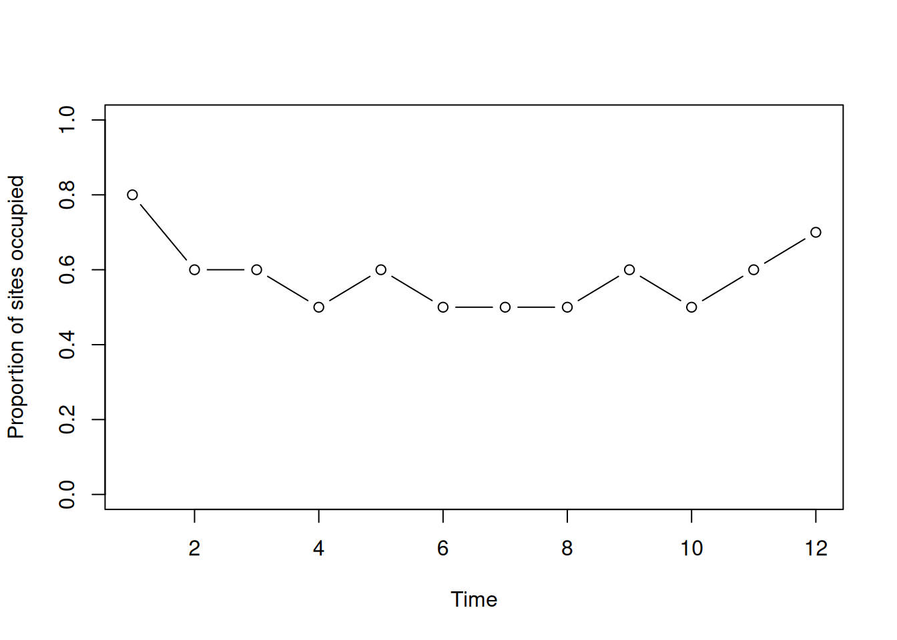
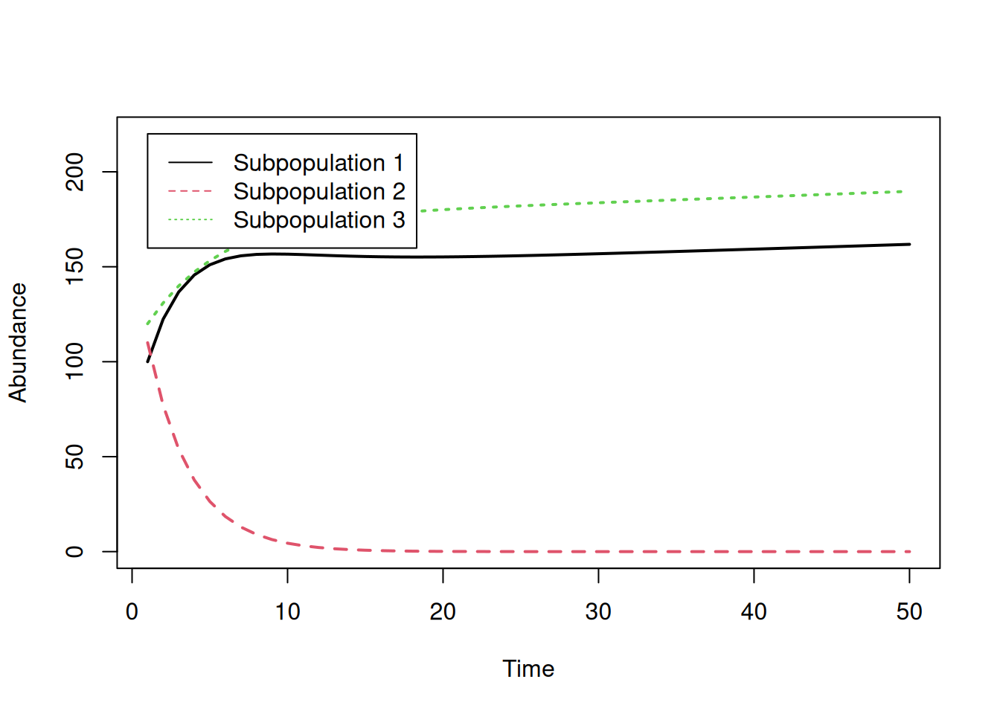
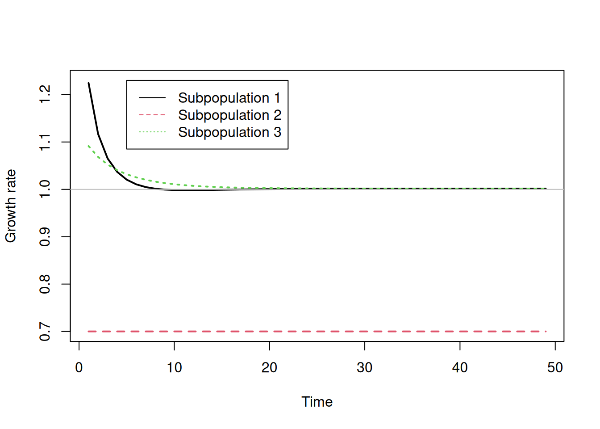

nSites <- 10
nYears <- 12
gamma <- 0.2 ## Colonization probability
epsilon <- 0.25 ## Local extinction probabilityLab 8 Assignment — Metapopulation Models
Due by 5:00pm on Friday
Answer each of the following questions and upload your Excel file and R script to ELC. Be sure to show your calculations. Undergraduates only have to do Exercise I in R.
Exercise I: Occupancy-based metapopulation models
Imagine a metapopulation consisting of 16 sites. In the first year (\(t=0\)), the first 2 sites are occupied and the other 14 are not.
Project the metapopulation forward 40 years using a stochastic non-spatial model with colonization (\(\gamma\)) equal to 0.3 and local extinction (\(\epsilon\)) equal to 0.2.
Hint: to simulate whether a site is occupied or not in a given year, you must first compute occupancy probability (\(\psi\)) and then generate the binary presence/absence value using a Bernoulli distribution. The best way to generate a Bernoulli random variable in Excel is to use the
IFandRANDfunctions, not the Bernoulli random number generator. Your formula should look something like=IF(RAND()<CELL, 1, 0)withCELLreplaced by an actual cell containing the occupancy probability (\(\psi\)). It will be much faster to drag these equations across cells for all years and sites, than it would be using the Bernoulli random number generator.Additional information: In short, the
RANDfunction draws a random number between 0 and 1. TheIFfunction returns a 1 if this value is less than occupancy probability (\(\psi\)), or it returns a 0 if the random number is greater than \(\psi\). This is doing the same thing as using the Bernoulli distribution to draw a random number.Make a graph of the proportion of sites occupied (PrO) on the y-axis, and time on the x-axis.
Exercise II: Abundance-based metapopulation models
You have been hired by the Charles Darwin Research Center on the Galapagos Islands. Your job is to assess a metapopulation of a species of special concern – the Magnificent Frigatebird.
Historical (fake) data showed that 2 populations of frigatebirds were isolated for 40 years.
- Project each population forward 40 years using the basic geometric growth model (not the metapopulation model) with \(\lambda_1=1.05\) and \(\lambda_2=0.95\).
- Next, imagine the 2 populations were actually connected in a small metapopulation. Use the abundance-based metapopulation model (including immigration and emigration) to project these connected subpopulations forward 40 years. Calculate the final growth rates for each population.
- Calculate the final growth rate (\(N_{t+1}/N_t\)) for each population, in each of the two scenarios above.
- Make a graph of abundance vs. time for the isolated and connected populations.
- Is site 2 a source or a sink? With this in mind, briefly describe the patterns you see in the graph and discuss the effects (positive and negative) of linking the two populations via dispersal if your goal was to sustain frigatebirds.
Occupancy based metapopulation models in R
Here is an example of how to simulate occupancy data. First, define the parameters and create an empty matrix to store the binary presence/absence data.
Let’s assume that we know that the first 8 sites were occupied in year 1. In practice, we would have to estimate initial occupancy.
O <- psi <- matrix(NA, nYears, nSites)
O[1,] <- c(rep(1, 8), 0, 0)In subsequent years, occupancy is determined by colonization and extinction. We can simulate data using the rbinom function. When you set the size argument to 1, rbinom generates random numbers from a Bernoulli distribution.
for(t in 2:nYears) {
psi.t <- O[t-1,]*(1-epsilon) + (1-O[t-1,])*gamma
O[t,] <- rbinom(nSites, size=1, prob=psi.t)
}Take a look at the binary occupancy data.
O [,1] [,2] [,3] [,4] [,5] [,6] [,7] [,8] [,9] [,10]
[1,] 1 1 1 1 1 1 1 1 0 0
[2,] 0 1 1 0 1 1 1 1 0 0
[3,] 0 1 1 0 1 1 1 1 0 0
[4,] 0 0 1 0 1 1 1 1 0 0
[5,] 1 0 1 1 1 0 1 1 0 0
[6,] 1 0 1 1 1 0 0 1 0 0
[7,] 1 0 1 1 0 1 0 0 0 1
[8,] 1 0 0 1 0 1 1 0 0 1
[9,] 1 0 1 1 0 1 0 0 1 1
[10,] 0 0 1 1 1 1 0 0 1 0
[11,] 0 0 1 1 1 1 0 1 1 0
[12,] 0 0 1 1 1 1 0 1 1 1Compute the number of sites occupied each year.
nOccupied <- rowSums(O)
nOccupied [1] 8 6 6 5 6 5 5 5 6 5 6 7Compute the proportion of sites occupied (PrO) each year.
PrO <- nOccupied / nSites
PrO [1] 0.8 0.6 0.6 0.5 0.6 0.5 0.5 0.5 0.6 0.5 0.6 0.7Graph it.
plot(1:nYears, PrO, type="b", xlab="Time", ylab="Proportion of sites occupied",
ylim=c(0, 1))
Abundance-based metapopulation models in R
Suppose we have a metapopulation with 3 subpopulations characterized by growth rates of \(\lambda_1=0.98\), \(\lambda_2=1\), and \(\lambda_3=1.02\). The transition probability matrix is:
\[ \begin{bmatrix} 0.9 & 0.0 & 0.1 \\ 0.2 & 0.7 & 0.1 \\ 0.1 & 0.0 & 0.9 \end{bmatrix} \]
Define parameters in R.
lambda <- c(0.98, 1, 1.02)
pi <- matrix(c(
0.9, 0.0, 0.1,
0.2, 0.7, 0.1,
0.1, 0.0, 0.9), nrow=3, ncol=3, byrow=TRUE)
nPatches <- 3
nYears <- 50Set the initial population sizes to 100, 110, and 120.
n <- matrix(NA, nYears, nPatches)
n[1,] <- c(100, 110, 120)Project the metapopulation forward.
for(t in 2:nYears) {
n[t,1] <- n[t-1,1]*lambda[1]*(1-pi[1,2]-pi[1,3]) +
n[t-1,2]*lambda[2]*pi[2,1] + n[t-1,3]*lambda[3]*pi[3,1]
n[t,2] <- n[t-1,2]*lambda[2]*(1-pi[2,1]-pi[2,3]) +
n[t-1,1]*lambda[1]*pi[1,2] + n[t-1,3]*lambda[3]*pi[3,2]
n[t,3] <- n[t-1,3]*lambda[3]*(1-pi[3,1]-pi[3,2]) +
n[t-1,1]*lambda[1]*pi[1,3] + n[t-1,2]*lambda[2]*pi[2,3]
}Do the same projection, but use matrix multiplication.
for(t in 2:nYears) {
n[t,] <- t(pi) %*% (n[t-1,]*lambda)
## Same as:
## n[t,] <- t(pi) %*% diag(lambda) %*% n[t-1,]
}Calculate the growth rates.
lambda.it <- n[-1,] / n[-nYears,]
## Same as:
## lambda.it <- n[2:nYears,] / n[1:(nYears-1),]Visualize changes in abundance over time.
matplot(n, type="l", xlab="Time", ylab="Abundance",
ylim=c(0, 220), lwd=2)
legend(x=1, y=220,
c("Subpopulation 1", "Subpopulation 2", "Subpopulation 3"),
lty=1:3, col=1:3)
Visualize changes in growth rates over time.
matplot(lambda.it, type="l", xlab="Time", ylab="Growth rate",
ylim=c(0.7, 1.23), lwd=2)
legend(x=5, y=1.23,
c("Subpopulation 1", "Subpopulation 2", "Subpopulation 3"),
lty=1:3, col=1:3)
abline(h=1, col="grey", lty=1)